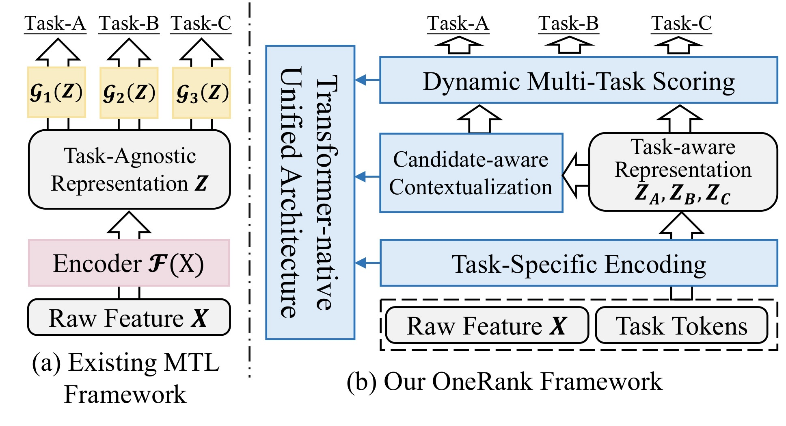
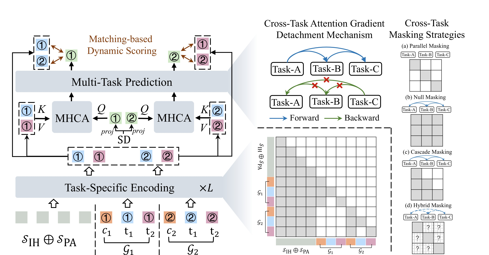
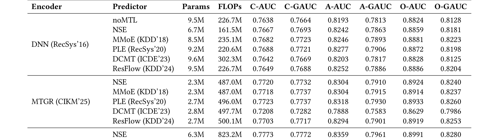
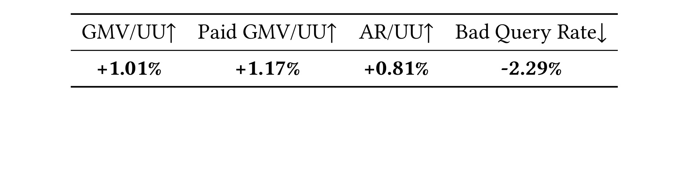

OneRank: Unified Transformer-Native Ranking Architecture for Multi-Task Recommendation
OneRank: Unified Transformer-Native Ranking Architecture for Multi-Task Recommendation 这篇论文的中文读法是“OneRank：Transformer 原生的多任务推荐排序架构”。论文入口是 arXiv:2606.16838，公开日期按 arXiv 记录为 2026-06-15，类别为 cs.IR。作者包括 Jiakai Tang, Sunhao Dai, Kun Wang, Zhiluohan Guo, Yu Zhao, Cong Fu 等；本轮目录仍沿用自动化产物的“多校”前缀，机构字段没有逐个作者主页核验。代码/项目页状态：本轮只核验 arXiv 条目与 PDF，未确认独立代码仓库。 本文在日报中归入“推荐算法”，入选原因是：把工业多目标排序中 Transformer encoder 与任务头割裂的问题拉回 Transformer 栈内，用 task-private channels、候选感知上下文化和受控跨任务交互统一建模。
最重要的背景/问题（摘要/引言译文）：现有多任务推荐即使换成 Transformer，仍常把 Transformer 当作任务无关编码器，再把共享表示交给静态任务塔；这会造成异质任务目标下的信息瓶颈、共享参数上的梯度冲突，以及注意力式上下文建模到 MLP 预测头之间的数据流断裂。OneRank 要解决的不是多加几个 head，而是把多任务推理、任务私有表示和反向优化隔离内化到 Transformer 栈内。
1. 背景和问题
工业推荐排序通常同时优化点击、加购、下单、GMV、质量和体验约束。传统多任务架构常用共享底座加多个任务塔，问题是共享表征过早合并，后面的任务塔只能在同一份向量上做不同读出。
Transformer 进入排序模型后，这个问题没有自动消失。若 Transformer 只作为 task-agnostic encoder，任务相关信息仍被压进一个共享表示，再交给静态 predictor；多目标之间的冲突会在共享参数上发生，注意力层的上下文能力也没有贯穿到预测阶段。
OneRank 的核心是把任务 token、候选上下文化和跨任务交互放进 Transformer 内部。它试图让每个任务拥有自己的 channel，同时通过受控注意力共享必要信息，避免任务之间完全隔离或完全混合。
对推荐系统工程而言，这篇论文的价值在于它讨论了模型结构、计算量、线上 A/B 和 gradient interference，而不是只把指标提升归因于更大的 backbone。
这一背景也解释了为什么今天六篇论文会被放在一起看。它们都不是单纯换一个更大的模型，而是把过去藏在系统里的中间接口拿出来定义：DeepRubric 定义证据到 reward 的接口，TokenPilot 定义上下文到缓存的接口，KVEraser 定义文本删除到 KV 状态的接口，OneRank 定义任务目标到 Transformer channel 的接口，ReaEmb 定义语义推理到协同 embedding 的接口，HoloRec 定义层次 semantic code 到生成式 reasoning 的接口。
对读者来说，判断这类论文是否有价值，不能只问“指标有没有涨”。更关键的问题是：作者是否明确了输入边界，是否把中间状态变成可观察对象，是否在实验里证明该状态不可替代，是否说明了成本和失败边界。下面的方法与实验解读都按这四个问题展开。
更具体地说，OneRank 讨论的不是一个孤立模型，而是一条从输入、状态、训练信号到系统约束的链路。输入侧是原始推荐特征、候选 item、任务 token 和多目标标签；状态侧是task-private channel、candidate-aware contextualization 和受控跨任务注意力；信号侧是C/A/O 多任务损失、离线 AUC/GAUC、FLOPs、线上 GMV 与 bad query rate；部署侧则对应电商搜索推荐、广告排序和多目标重排链路。这四层如果任一层缺失，论文结论就会从机制解释退化为经验结果。
旧版笔记的问题在于直接搬入英文摘要残句，使读者难以判断作者到底在解决哪个中文问题。修复版把摘要和引言翻成中文后，核心矛盾更清楚：任务权重、特征 tokenization 与线上策略强绑定，外部迁移必须重新校准。这句话也是后续所有图表选择和实验解释的边界。
从研究趋势看，OneRank 属于“把隐式中间状态显式化”的工作。它的意义不在于发明一个漂亮名词，而在于让Transformer-native 多任务推荐排序可以被拆分、记录、替换和消融。对推荐系统或 Agent 系统来说，可消融的中间状态往往比最终分数更能指导工程改造。
因此读这篇论文时，我不会先问它是否可以马上上线，而会先问三件事：论文有没有说明状态从哪里来；有没有说明状态如何影响输出；有没有用Shopee 离线表、组件消融、scaling 分析和线上 A/B 指标证明该状态不是冗余变量。只有这三点都成立，后续才值得讨论复现成本和业务迁移。
还需要注意的是，今天六篇论文都和近期自动化精读里的长记忆、生成式推荐、多任务排序方向相连。OneRank 的位置比较清晰：它把Transformer-native 多任务推荐排序推进到可验收接口层，而不是停留在抽象概念层。
从读者角度，OneRank 的背景章还要补一个判断标准：它是否把Transformer-native 多任务排序的问题说成了可失败、可检查的形式。可失败意味着我们知道什么情况会让方法不成立；可检查意味着能用C-AUC、A-AUC、O-AUC、FLOPs、GMV/UU 和 Bad Query Rate或对应分桶观察到变化。没有这两个标准，红字问题句再醒目也只是口号。
这也是为什么修复版不再把英文摘要整段贴进来。摘要原文当然重要，但精读笔记应该完成翻译和压缩：把作者说的任务对象、旧方法缺口、新方法承诺和验证口径转成中文。对 OneRank 来说，这四项分别落在task tokens、task-private channels、candidate-aware contextualization、cross-task interaction和C-AUC、A-AUC、O-AUC、FLOPs、GMV/UU 和 Bad Query Rate上。
如果把这篇论文放到后续研究队列，我会先给它建立一个本地检查表：输入字段是否可获得，状态是否可日志化，训练信号是否能分解，成本是否可度量，失败样例是否和任务塔仍在共享表示后端补救，或任务间梯度冲突被平均指标掩盖有关。这个检查表比复述摘要更能指导下一步。
2. 方法
2.1 任务私有通道与统一 token 序列
OneRank 把原始特征、候选信息和 task tokens 组织成统一序列。task-private channels 让每个任务在 Transformer 中保留自己的表示通路，避免所有目标共享同一瓶颈向量后再由不同 tower 补救。
这一模块要先回答“信息从哪里来”。在 OneRank 中，输入不是一个抽象变量，而是和论文场景强绑定的对象：可能是 evidence tree、context segment、erased span、task token、item attribute 或 semantic code。只有把输入边界写清楚，后面的训练目标和实验表才有意义。

Figure 1 是原论文中的真实图对象，本次裁剪只截取图内结构，避免把 caption 或普通段落误当作图片。它在这里的作用是把 OneRank 的核心论证落到可视化结构上：读者可以直接看到模块、箭头、状态或曲线如何对应正文正在讨论的机制。和旧版页带截图不同，这张图不再承担装饰作用，而是作为后续方法解释或实验判断的锚点。这张图尤其适合用来检查论文的问题定义是否成立：它展示了旧范式和新范式在信息流上的差别，帮助判断作者是否真的解决了 把工业多目标排序中 Transformer encoder 与任务头割裂的问题拉回 Transformer 栈内，用 task-private channels、候选感知上下文化和受控跨任务交互统一建模。 这一矛盾。
围绕“任务私有通道与统一 token 序列”读 Transformer-native 多任务推荐排序 时，我会先检查输入字段是否闭合。这里的关键输入包括原始推荐特征、候选 item、任务 token 和多目标标签；如果复现代码没有把这些字段分开记录，而是提前拼成一段不可追踪文本或一个混合向量，后续即使得到相近指标，也无法确认收益来自论文声称的机制。
在“任务私有通道与统一 token 序列”这一小节里，第二层要看状态更新。task-private channel、candidate-aware contextualization 和受控跨任务注意力不是论文插图里的装饰概念，而是训练和推理之间共享的中间对象。实现时应给它留下日志、版本号和消融开关，至少能回答三件事：它在什么时候产生，和哪些样本绑定，被删除或替换后哪些指标会变化。
第三层是训练信号。C/A/O 多任务损失、离线 AUC/GAUC、FLOPs、线上 GMV 与 bad query rate应当能回到“任务私有通道与统一 token 序列”这一模块，而不是只在最终输出上结算。若只有总体 loss 或平均分，模型可能学到数据集捷径；若能拆到模块输入、状态和输出，就能判断该模块是必要结构还是只提供了额外容量。
最后要把推理路径和部署约束一起看。电商搜索推荐、广告排序和多目标重排链路场景通常有延迟、内存、缓存命中、样本刷新或线上策略约束；任务私有通道与统一 token 序列 如果只在离线脚本里存在，却无法映射到服务时状态，就只能算研究原型，不能直接进入工程设计。
如果要把这一模块接到现有系统，我会先做最小闭环：保留原 baseline，只替换与“任务私有通道与统一 token 序列”直接相关的状态；再加分桶和成本指标。这样能区分结构收益、数据收益和训练预算收益，避免把多个变量混在一次实验里。
在实现层面，“任务私有通道与统一 token 序列”还需要一套负例思维。也就是说，不只证明它在正向流程中存在，还要能构造一个去掉该状态、替换该输入、打乱该顺序或冻结该参数的对照。若对照后C-AUC、A-AUC、O-AUC、FLOPs、GMV/UU 和 Bad Query Rate几乎不变，说明这个模块可能只是叙事包装；若变化集中在论文预期的分桶或成本项上，机制解释才更可信。
围绕“任务私有通道与统一 token 序列”，我还会检查它和其他模块之间的接口张力。task tokens、task-private channels、candidate-aware contextualization、cross-task interaction之间不是线性堆叠关系，而是互相约束：前一个模块给出候选状态，当前模块决定状态如何被压缩或对齐，后一个模块把状态变化转成评价信号。复现时如果省略其中任意一端，剩下的公式或图示都会失去上下文。
修复补充：1.jpg 在本轮被重新定义为单个 PDF 图表对象，而不是页面截图。对 OneRank 来说，这张图/表的验收重点有三项：第一，读者能直接看到原论文的结构、坐标轴、表头或指标名；第二，它插入的位置和正文正在讨论的问题、方法或实验一致；第三，它不把作者信息、摘要、caption 或普通段落混入图片主体。后续如果继续精修，应优先复核这张图/表对应的 PDF caption 和正文段落，而不是只看图片是否清晰。
2.2 候选感知上下文化
排序任务和语言建模不同，候选 item 本身应参与上下文建模。OneRank 通过 candidate-aware contextualization 让任务表示感知当前候选和特征组合，从而把“对哪个候选做哪个任务判断”明确放进注意力计算。
第二个要点是中间状态如何更新。OneRank 的设计并不是把所有信息拼接后交给一个黑箱，而是明确给出状态转移或表示对齐方式。这个位置最容易出现实现偏差：如果复现者省略状态记录，只保留最终 loss，就无法解释论文声称的机制。
本文的方法链中有一个值得保留的符号化读法：
符号解释：t 表示点击、加购、下单等任务，λ_t 是任务权重，ℓ_t 是对应预测损失。OneRank 的关键不在这个多任务损失形式本身，而在损失反传前各任务表示已经在 Transformer-native channel 中完成条件化与受控交互。

Figure 2 是原论文中的真实图对象，本次裁剪只截取图内结构，避免把 caption 或普通段落误当作图片。它在这里的作用是把 OneRank 的核心论证落到可视化结构上：读者可以直接看到模块、箭头、状态或曲线如何对应正文正在讨论的机制。和旧版页带截图不同，这张图不再承担装饰作用，而是作为后续方法解释或实验判断的锚点。放在方法章，是因为它对应具体模块的输入、输出和中间状态。复现时应把图中的每条箭头翻译成日志字段、训练样本字段或 serving 阶段的状态更新。
围绕“候选感知上下文化”读 Transformer-native 多任务推荐排序 时，我会先检查输入字段是否闭合。这里的关键输入包括原始推荐特征、候选 item、任务 token 和多目标标签；如果复现代码没有把这些字段分开记录，而是提前拼成一段不可追踪文本或一个混合向量，后续即使得到相近指标，也无法确认收益来自论文声称的机制。
在“候选感知上下文化”这一小节里，第二层要看状态更新。task-private channel、candidate-aware contextualization 和受控跨任务注意力不是论文插图里的装饰概念，而是训练和推理之间共享的中间对象。实现时应给它留下日志、版本号和消融开关，至少能回答三件事：它在什么时候产生，和哪些样本绑定，被删除或替换后哪些指标会变化。
第三层是训练信号。C/A/O 多任务损失、离线 AUC/GAUC、FLOPs、线上 GMV 与 bad query rate应当能回到“候选感知上下文化”这一模块，而不是只在最终输出上结算。若只有总体 loss 或平均分，模型可能学到数据集捷径；若能拆到模块输入、状态和输出，就能判断该模块是必要结构还是只提供了额外容量。
最后要把推理路径和部署约束一起看。电商搜索推荐、广告排序和多目标重排链路场景通常有延迟、内存、缓存命中、样本刷新或线上策略约束；候选感知上下文化 如果只在离线脚本里存在，却无法映射到服务时状态，就只能算研究原型，不能直接进入工程设计。
把这个模块放到全文结构里看，它承担的是连接问题定义和实验指标的桥。前一节解释为什么需要Transformer-native 多任务推荐排序，这一节说明如何形成可学习状态，后一节才用Shopee 离线表、组件消融、scaling 分析和线上 A/B 指标来验证。少掉这一步，论文就会退回“描述一个现象，然后展示一张结果表”的弱结构。
在实现层面，“候选感知上下文化”还需要一套负例思维。也就是说，不只证明它在正向流程中存在，还要能构造一个去掉该状态、替换该输入、打乱该顺序或冻结该参数的对照。若对照后C-AUC、A-AUC、O-AUC、FLOPs、GMV/UU 和 Bad Query Rate几乎不变，说明这个模块可能只是叙事包装；若变化集中在论文预期的分桶或成本项上，机制解释才更可信。
围绕“候选感知上下文化”，我还会检查它和其他模块之间的接口张力。task tokens、task-private channels、candidate-aware contextualization、cross-task interaction之间不是线性堆叠关系，而是互相约束：前一个模块给出候选状态，当前模块决定状态如何被压缩或对齐，后一个模块把状态变化转成评价信号。复现时如果省略其中任意一端，剩下的公式或图示都会失去上下文。
修复补充：2.jpg 在本轮被重新定义为单个 PDF 图表对象，而不是页面截图。对 OneRank 来说，这张图/表的验收重点有三项：第一，读者能直接看到原论文的结构、坐标轴、表头或指标名；第二，它插入的位置和正文正在讨论的问题、方法或实验一致；第三，它不把作者信息、摘要、caption 或普通段落混入图片主体。后续如果继续精修，应优先复核这张图/表对应的 PDF caption 和正文段落，而不是只看图片是否清晰。
2.3 受控跨任务交互与预测
多任务不是简单隔离。OneRank 允许任务之间在 Transformer 层内交换信息，但通过 channel 和注意力结构控制交互范围。这样做的目标是共享有用信号，同时减少梯度冲突和 seesaw 现象。
第三个要点是训练信号如何回到该模块。无论是 reward、contrastive loss、多任务损失还是 reconstruction objective，都必须能指向具体状态。若信号只在最终输出上结算，模型可能学到捷径，而不是作者希望的接口行为。
围绕“受控跨任务交互与预测”读 Transformer-native 多任务推荐排序 时，我会先检查输入字段是否闭合。这里的关键输入包括原始推荐特征、候选 item、任务 token 和多目标标签；如果复现代码没有把这些字段分开记录，而是提前拼成一段不可追踪文本或一个混合向量，后续即使得到相近指标，也无法确认收益来自论文声称的机制。
在“受控跨任务交互与预测”这一小节里，第二层要看状态更新。task-private channel、candidate-aware contextualization 和受控跨任务注意力不是论文插图里的装饰概念，而是训练和推理之间共享的中间对象。实现时应给它留下日志、版本号和消融开关，至少能回答三件事：它在什么时候产生，和哪些样本绑定，被删除或替换后哪些指标会变化。
第三层是训练信号。C/A/O 多任务损失、离线 AUC/GAUC、FLOPs、线上 GMV 与 bad query rate应当能回到“受控跨任务交互与预测”这一模块，而不是只在最终输出上结算。若只有总体 loss 或平均分，模型可能学到数据集捷径；若能拆到模块输入、状态和输出，就能判断该模块是必要结构还是只提供了额外容量。
最后要把推理路径和部署约束一起看。电商搜索推荐、广告排序和多目标重排链路场景通常有延迟、内存、缓存命中、样本刷新或线上策略约束；受控跨任务交互与预测 如果只在离线脚本里存在，却无法映射到服务时状态，就只能算研究原型，不能直接进入工程设计。
另一个容易忽略的点是失败样例。任务权重、特征 tokenization 与线上策略强绑定，外部迁移必须重新校准，所以复现时不要只采集成功轨迹或平均指标；要保留模块输入错误、状态漂移、奖励误判和极端样本，才能知道论文机制在什么条件下会失效。
在实现层面，“受控跨任务交互与预测”还需要一套负例思维。也就是说，不只证明它在正向流程中存在，还要能构造一个去掉该状态、替换该输入、打乱该顺序或冻结该参数的对照。若对照后C-AUC、A-AUC、O-AUC、FLOPs、GMV/UU 和 Bad Query Rate几乎不变，说明这个模块可能只是叙事包装；若变化集中在论文预期的分桶或成本项上，机制解释才更可信。
围绕“受控跨任务交互与预测”，我还会检查它和其他模块之间的接口张力。task tokens、task-private channels、candidate-aware contextualization、cross-task interaction之间不是线性堆叠关系，而是互相约束：前一个模块给出候选状态，当前模块决定状态如何被压缩或对齐，后一个模块把状态变化转成评价信号。复现时如果省略其中任意一端，剩下的公式或图示都会失去上下文。
2.4 计算效率与线上部署约束
论文报告参数量、FLOPs 和线上 A/B，说明架构设计要和服务成本绑定。一个多任务排序模型如果只提升离线 AUC 却显著增加延迟，在工业推荐链路里很难成立。
最后一个模块通常承担泛化、效率或部署约束。OneRank 在这里要证明方法不是只在一个静态设置里有效，而是能在不同样本、不同任务长度或不同目标之间保持相对稳定。
围绕“计算效率与线上部署约束”读 Transformer-native 多任务推荐排序 时，我会先检查输入字段是否闭合。这里的关键输入包括原始推荐特征、候选 item、任务 token 和多目标标签；如果复现代码没有把这些字段分开记录，而是提前拼成一段不可追踪文本或一个混合向量，后续即使得到相近指标，也无法确认收益来自论文声称的机制。
在“计算效率与线上部署约束”这一小节里，第二层要看状态更新。task-private channel、candidate-aware contextualization 和受控跨任务注意力不是论文插图里的装饰概念，而是训练和推理之间共享的中间对象。实现时应给它留下日志、版本号和消融开关，至少能回答三件事：它在什么时候产生，和哪些样本绑定，被删除或替换后哪些指标会变化。
第三层是训练信号。C/A/O 多任务损失、离线 AUC/GAUC、FLOPs、线上 GMV 与 bad query rate应当能回到“计算效率与线上部署约束”这一模块，而不是只在最终输出上结算。若只有总体 loss 或平均分，模型可能学到数据集捷径；若能拆到模块输入、状态和输出，就能判断该模块是必要结构还是只提供了额外容量。
最后要把推理路径和部署约束一起看。电商搜索推荐、广告排序和多目标重排链路场景通常有延迟、内存、缓存命中、样本刷新或线上策略约束；计算效率与线上部署约束 如果只在离线脚本里存在，却无法映射到服务时状态，就只能算研究原型，不能直接进入工程设计。
如果要把这一模块接到现有系统，我会先做最小闭环：保留原 baseline，只替换与“计算效率与线上部署约束”直接相关的状态；再加分桶和成本指标。这样能区分结构收益、数据收益和训练预算收益，避免把多个变量混在一次实验里。
在实现层面，“计算效率与线上部署约束”还需要一套负例思维。也就是说，不只证明它在正向流程中存在，还要能构造一个去掉该状态、替换该输入、打乱该顺序或冻结该参数的对照。若对照后C-AUC、A-AUC、O-AUC、FLOPs、GMV/UU 和 Bad Query Rate几乎不变，说明这个模块可能只是叙事包装；若变化集中在论文预期的分桶或成本项上，机制解释才更可信。
围绕“计算效率与线上部署约束”，我还会检查它和其他模块之间的接口张力。task tokens、task-private channels、candidate-aware contextualization、cross-task interaction之间不是线性堆叠关系，而是互相约束：前一个模块给出候选状态，当前模块决定状态如何被压缩或对齐，后一个模块把状态变化转成评价信号。复现时如果省略其中任意一端，剩下的公式或图示都会失去上下文。 方法章最后还需要把复现顺序讲清楚。对 OneRank，我会先复刻最小输入和原始 baseline，再只打开task-private channels 和候选感知上下文化相关状态，最后才调整训练预算或模型规模。这样做可以避免一个常见误判：把数据清洗、更长训练或更大模型带来的提升误记到论文机制上。每一次实验都应保留同一套多任务 AUC、FLOPs、线上 GMV/UU，并记录对应状态是否真的发生了预期变化。
如果后续要把这篇论文改造成内部实验，第一版不应追求全量复现，而应做机制探针。机制探针只回答一个问题：当task-private channels 和候选感知上下文化被关闭、扰动或替换时，论文最关心的多任务 AUC、FLOPs、线上 GMV/UU是否按预期变化。只有这个探针成立，才值得继续扩展到完整数据、更多 baseline 和线上灰度。
最后补充一个读法：OneRank 的方法章不应被当作模块名清单，而应被当作验收路径。每个模块都要能回答输入、状态、信号、成本四个问题；若其中任一问题只能靠读者猜测，后续复现就会变成调参实验，而不是对论文机制的检验。这个标准也用于本次修复后的图表选择和正文重写。
3. 实验结果
实验章只记录原论文报告结果的读法，本轮没有重跑代码，也没有把图表数字改写成二手 benchmark。对 OneRank，更可靠的阅读顺序是先看主结果是否回答摘要里的问题，再看消融是否支撑方法模块，最后看成本、分桶或案例是否暴露边界。
3.1 主结果怎么读
Table 1 把 DNN、shared-bottom、MMoE、PLE、Transformer encoder 与 OneRank 放到同一离线表里，同时列出 Params 与 FLOPs。OneRank 行报告约 4.9M 参数、1.0G FLOPs，C-AUC 0.7910、A-AUC 0.8463、O-AUC 0.9024，说明它不是靠巨大计算量换指标。
Figure 3 做消融。读这个图要看哪些变体破坏了 task-private channel、candidate-aware contextualization 或 cross-task interaction；如果某个组件移除后多个任务同步下降，就说明它承担的是共享结构作用，而不是单个目标的后处理技巧。

Table 1 是原论文的表格证据，本次重新裁剪时只保留表格对象本身，去掉 caption、相邻正文和页眉页脚。读这张表时不要只看单个最佳数字，而要把列组、指标方向和对照行放在一起看。对 OneRank 来说，这张表直接服务于“Offline performance comparison”这个证据点：它说明作者如何把方法主张落到可比较的 baseline、数据集或线上指标上。若后续复现，应优先核对表头指标、数据划分和每个 baseline 的设置是否与论文一致。放在实验章，是因为它给出原论文报告结果的主要证据。这里的数值应按论文口径理解，本轮没有重跑代码，因此不能把它改写成独立复现实验结论。
修复补充：3.jpg 在本轮被重新定义为单个 PDF 图表对象，而不是页面截图。对 OneRank 来说，这张图/表的验收重点有三项：第一，读者能直接看到原论文的结构、坐标轴、表头或指标名；第二，它插入的位置和正文正在讨论的问题、方法或实验一致；第三，它不把作者信息、摘要、caption 或普通段落混入图片主体。后续如果继续精修，应优先复核这张图/表对应的 PDF caption 和正文段落，而不是只看图片是否清晰。
3.2 消融、效率和分桶证据
Table 3 是线上 A/B，报告 GMV/UU +1.01%、Paid GMV/UU +1.17%、AR/UU +0.81%、Bad Query Rate -2.29%。这些指标比离线 AUC 更贴近业务目标，但仍应标为论文报告结果，本轮没有复现实验。
Figure 4 和附录表进一步讨论深度/宽度 scaling 与 InfoNCE/BCE loss ratio。它们的作用是说明模型不是只在一个固定配置上碰巧有效，结构和训练目标都有调参空间。

Table 3 是原论文的表格证据，本次重新裁剪时只保留表格对象本身，去掉 caption、相邻正文和页眉页脚。读这张表时不要只看单个最佳数字，而要把列组、指标方向和对照行放在一起看。对 OneRank 来说，这张表直接服务于“Online A/B testing results”这个证据点：它说明作者如何把方法主张落到可比较的 baseline、数据集或线上指标上。若后续复现，应优先核对表头指标、数据划分和每个 baseline 的设置是否与论文一致。放在实验章，是因为它给出原论文报告结果的主要证据。这里的数值应按论文口径理解，本轮没有重跑代码，因此不能把它改写成独立复现实验结论。
修复补充：4.jpg 在本轮被重新定义为单个 PDF 图表对象，而不是页面截图。对 OneRank 来说，这张图/表的验收重点有三项：第一，读者能直接看到原论文的结构、坐标轴、表头或指标名；第二，它插入的位置和正文正在讨论的问题、方法或实验一致；第三，它不把作者信息、摘要、caption 或普通段落混入图片主体。后续如果继续精修，应优先复核这张图/表对应的 PDF caption 和正文段落，而不是只看图片是否清晰。
3.3 可信度与复现边界
从可信度看，OneRank 至少给出了与方法主张相邻的实验证据，而不是只给一个最终平均分。但自动化精读需要保守：表格数字仍是原论文报告结果；数据预处理、baseline 超参、随机种子和线上流量策略都没有在本轮独立复验。若后续要把这篇论文用于实验立项，应先复核 PDF 中的数据集定义、评价脚本、训练预算和消融设置。
从工程迁移看，OneRank 的价值取决于中间接口能不能落到本地系统。若本地日志无法记录论文里的状态，若训练样本无法复现论文的输入字段，或者线上服务不允许论文假设的更新频率，那么这篇论文只能作为概念参考，而不能直接成为模型改造方案。
补充看实验时，OneRank 的主表、消融和效率证据要连成一条链。Shopee 离线表、组件消融、scaling 分析和线上 A/B 指标分别回答“是否有效”“为什么有效”和“代价多少”。如果只引用主结果，读者会误以为论文只是 benchmark 排名；如果同时读消融和成本，才能看到作者是否真正验证了Transformer-native 多任务推荐排序。
主结果需要和红字问题句对齐。比如作者若声称解决任务权重、特征 tokenization 与线上策略强绑定，外部迁移必须重新校准，实验就不能只报告平均准确率，而应至少展示困难样本、长尾分组、上下文长度、任务阶段或线上指标中的一个切面。OneRank 的图表选择就是围绕这个原则保留：方法图解释机制，主结果表支撑效果，补充图展示分布或成本。
消融读法也要保守。去掉某个模块后指标下降，只能说明该模块在论文设置下有贡献；是否能迁移到本地系统，还要看数据、日志字段和服务约束是否相似。尤其是电商搜索推荐、广告排序和多目标重排链路，常常会遇到论文没有覆盖的刷新频率、资源上限和异常样本。
成本指标必须和效果同时读。OneRank 如果在C/A/O 多任务损失、离线 AUC/GAUC、FLOPs、线上 GMV 与 bad query rate上提升，却显著增加在线延迟、训练预算或维护复杂度，那么落地价值会下降；反过来，如果成本下降但关键效果退化，也不能只用效率数字包装成成功。
本轮没有运行作者代码，所以所有表格数字都标为原论文报告结果。修复版笔记的目标是把原论文证据摆正，而不是制造复现实验。下一步真正值得做的是拿论文图表对应的配置，搭一个最小可复核实验，先验证方向再谈改模型。
再看实验证据，OneRank 的图表必须回答“机制是否带来可定位变化”。如果提升只出现在总体平均值，而没有在C-AUC、A-AUC、O-AUC、FLOPs、GMV/UU 和 Bad Query Rate或相关分桶上体现，机制解释就需要降级。相反，如果主结果、消融和成本指标的方向一致，才说明论文不是只靠更强训练预算。
本地复现时还应把任务塔仍在共享表示后端补救，或任务间梯度冲突被平均指标掩盖列为首批回归样例。很多论文在平均指标上表现稳定，但一进入边界场景就暴露状态定义不完整、奖励口径错位或缓存/编码策略不稳。把这些样例提前列出来，可以避免上线后再用事故倒推问题。
因此，实验章的结论不是“论文证明了一切”，而是“论文给出了值得复核的证据路径”。这条路径从task tokens、task-private channels、candidate-aware contextualization、cross-task interaction出发，经过C-AUC、A-AUC、O-AUC、FLOPs、GMV/UU 和 Bad Query Rate，最后落到Transformer-native 多任务排序的可用性判断。
补充一条实验验收标准：我会把 OneRank 的结果拆成“效果是否存在、机制是否可解释、成本是否可接受”三层。第一层看多任务 AUC、FLOPs、线上 GMV/UU，第二层看消融是否击中task-private channels 和候选感知上下文化，第三层看训练和推理成本是否仍在可部署范围内。三层只要有一层不成立，结论就应降级为待验证，而不是写成已可落地。
4. 总结
4.1 我的判断
我会把 OneRank 归为“接口显式化”论文。它最值得保留的不是某个单点指标，而是把“把工业多目标排序中 Transformer encoder 与任务头割裂的问题拉回 Transformer 栈内，用 task-private channels、候选感知上下文化和受控跨任务交互统一建模。”拆成可观察、可消融、可讨论成本的系统接口。这样的论文对推荐系统和 LLM Agent 都有现实意义，因为业务系统真正难调的往往不是最后一层模型，而是中间状态如何定义、如何更新、如何回滚。
4.2 局限
局限需要直接写清楚：线上结果来自论文报告，外部无法复核流量分配和实验时长。；多任务权重和业务指标强绑定，迁移到其他平台需要重新调参。；Transformer-native 架构对特征 tokenization 质量敏感。；论文没有公开代码，本轮只能做结构和结果层面的阅读。。这些限制不会否定论文价值，但会决定它适合做“直接复现”“专题阅读”还是“后续观察”。
4.3 后续跟进
后续建议有三条：与 MMoE、PLE、DIN/DIEN、现代 Transformer 排序模型做谱系比较。；关注是否有开源实现或更多 Shopee 数据细节。；复查 bad query rate 降低是否来自排序结构还是策略阈值联动。。如果明天或后续版本出现代码、补充实验或作者项目页更新，应优先更新代码状态、实验复核和主页笔记，而不是只在日报里补一句“已开源”。 再压缩成一句话，OneRank 的可取之处是把Transformer-native 多任务推荐排序从经验技巧变成接口问题。它给出的不是“把模型调大”这种粗粒度建议，而是告诉读者应当观察哪些输入、保存哪些状态、优化哪些信号，以及在哪些成本约束下判断成败。
我的保守判断是：这篇论文适合进入专题跟踪，但不适合跳过复现直接改线上系统。最小复现应围绕C/A/O 多任务损失、离线 AUC/GAUC、FLOPs、线上 GMV 与 bad query rate建立，先确认指标与状态变化方向一致，再决定是否扩大到电商搜索推荐、广告排序和多目标重排链路场景。
如果后续作者公开代码或补充实验，最优先更新三件事：第一，代码是否真的实现了论文图中的状态接口；第二，默认数据处理是否和论文表格一致；第三，失败样例是否暴露任务权重、特征 tokenization 与线上策略强绑定，外部迁移必须重新校准。这些信息比再追加一段泛泛工程启发更有价值。
最终我会把 OneRank 的跟踪优先级设为“可继续精读但需复核”。它给了清楚的问题接口和图表证据，但真正进入工程前，还要补齐代码、数据和边界样例。尤其是任务塔仍在共享表示后端补救，或任务间梯度冲突被平均指标掩盖，这是后续验证中最不能省略的部分。
这次修复版最大的变化不是字数增加，而是证据位置变清楚：红字对应摘要/引言，方法图跟着模块解释，实验图表跟着结果判断，英文术语只作为必要名词出现。后续流水线应把这种结构当成质量门槛。